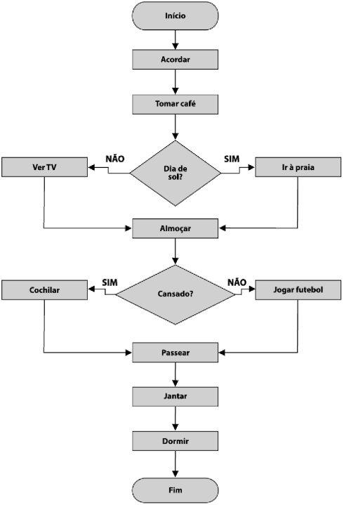

APRESENTAÇÃO
As ferramentas são técnicas e métodos utilizados para melhorar a eficiência e a qualidade dos processos produtivos, abrangendo desde o planejamento até a entrega do produto final. Elas auxiliam na identificação de problemas, análise de dados, tomada de decisões e implementação de ações corretivas, visando a otimização dos processos e a satisfação do cliente.
FLUXOGRAMA
Também chamado de gráfico de procedimentos ou gráfico de processos, o Fluxograma é a representação gráfica da sequência das etapas de um processo. É uma ferramenta de documentação do processo permitindo entender de forma rápida o funcionamento do processo.
Reconhecido como uma das 7 ferramentas da qualidade, o Fluxograma é estruturado por símbolos geométricos que indicam quais são os materiais, serviços, recursos envolvidos nos processos e as decisões que devem ser tomadas, delimitando o caminho que deve ser percorrido para entregar o melhor resultado através da execução do processo.
TIPOS DE FLUXOGRAMAS
- Diagramas de blocos
- Fluxograma de processo simples
- Fluxograma funcional
Também conhecido como fluxograma linear, é um fluxograma mais simples, composto apenas por blocos e não envolve pontos de decisão, apenas a sequência de funcionamento de um processo, ou seja, é como se fosse um checklist gráfico. É muito utilizado em instruções de trabalho simples ou um fluxo mais macro dos processos.

É um diagrama de blocos que contém pontos de decisão. Indica a sequencia de funcionamento em processos simples, que depende de uma condição para executar um tipo de tarefa.
Mostra a sequência de atividades de um processo entre as áreas ou seções por onde ele acontece. É muito útil para processos transversais, que passam por diversas áreas até ser concluído. Nele se inclui também os responsáveis pelos setores e pode até indicar gargalos no processo.

4 - Fluxograma vertical
Também conhecido como diagrama de processo, é um diagrama de formato diferente, composto por colunas verticais onde estão disponíveis simbologias referentes aos tipos de processo, descrição e outras informações.
Quando usar um fluxograma?
O Fluxograma é uma ferramenta utilizada para a organização sequencial dos processos da empresa, afim de deixar clara e padronização da execução, melhorando a comunicação, aumentando a produtividade e reduzindo retrabalhos e custos de operação.
Ele representa as etapas que compõe qualquer tipo de processo especificando as que merecem atenção especial por parte dos envolvidos na execução, identificando as rotinas da organização e deixando claro os pontos de alerta que podem ser melhorados continuamente.
O fluxograma é uma ferramenta fundamental tanto para o planejamento (elaboração do processo) como para o aperfeiçoamento (análise crítica e alterações) do processo, pode ser utilizado no planejamento de projetos, na documentação de processos, no estudo de melhorias de processos, no desenvolvimento da comunicação entre as pessoas envolvidas na execução e compreensão de como um processo é executado.
Um fluxograma pode ser desenvolvido para:
- Padronizar a representação de métodos administrativos
- Permitir maior rapidez da descrição de métodos administrativos
- Facilitar leitura e entendimento de um processo
- Melhorar a análise de um processo
- Facilitar a localização e identificação dos pontos mais importantes de um processo ou métodos
Como fazer?
O fluxograma é composto por três etapas: o início que compõe as entradas e os assuntos a serem considerados durante o planejamento, posteriormente o processo e em si, que engloba todas as operações e o fim, que são os resultados gerados durante o processo.
Para isso, cada atividade do processo deve ser descrita dentro de um símbolo, ajudando na identificação do que deverá ser realizado.
Devido ao grande número de símbolos, é importante que a empresa defina uma padronização para a utilização deles, para simplificar a compreensão por parte das pessoas envolvidas.
Para fazer um fluxograma você deve:
- Definir o processo que será esquematizado.
- Definir o escopo do processo: onde ou quando iniciar o processo? Onde ou quando parar? Qual o nível de detalhamento que será incluso no diagrama.
- Debater as atividades que acontecem durante o processo.
- Organizar as atividades em sequência adequada.
- Desenhar os símbolos referentes as atividades. Desenhar setas para mostrar o fluxo do processo.
DIAGRAMA DE ISHIKAWA
O Diagrama de Ishikawa é uma das 7 ferramentas da Qualidade e também é conhecida como Diagrama de Espinha de Peixe, por causa do seu formato, ou Diagrama de Causa e Efeito, por ser composta pelo problema e suas possíveis causas.
A ferramenta é usada para encontrar, organizar, classificar, documentar e exibir graficamente as causas de um determinado problema, agrupados por categorias, que facilitam o brainstorming de ideias e análise da ocorrência. Como as causas são hierarquizadas, é possível identificar de maneira concreta as fontes de um problema.
Um brainstorming com a equipe pode incentivar uma análise aprofundada sobre o problema, que envolva a maioria das possíveis causas de um problema, pois promove a discussão, e consequente melhoria do processo.
Algumas palavras chave utilizadas na elaboração do Diagrama de Ishikawa são:
- Efeito - Aquilo que é produzido por uma causa, resultado, consequência.
- Problema - dificuldade na obtenção de um determinado objetivo ou resultado esperado, situação difícil que pede uma solução, no Diagrama de Ishikawa, é comum que o problema apareça como uma pergunta.
- Causa - origem, motivo, razão de algo.
- Causa primária ou Principal - causas mais notáveis, causas de primeiro nível que agruparão subcausas
- Causa Secundária - subcausas das causas principais, ramificação das causas principais.
O método do Ishikawa parte da hipótese de que para cada problema há um número limitado de causas primárias ou principais, secundárias, terciárias, e assim sucessivamente.
Por ser elaborado inicialmente para sistemas industriais, as causas são agrupadas em 6 categorias, que são conhecidas como 6 Ms: máquina, materiais, mão de obra, meio ambiente, método e medidas.
Máquina
Aqui devemos considerar todas as causas originadas de falhas no maquinário usado durante o processo, como funcionamento incorreto, falha mecânica, etc.
Materias
Quando o problema é causado pois a matéria-prima ou o material que foi utilizado no processo não está em conformidade com as exigências para a realização do trabalho, ou seja, está fora das especificações necessárias para ser usado, como produto em tamanho incorreto, vencido, fora da temperatura ideal, etc.
Mão de obra
Os problemas também podem envolver atitudes e dificuldades das pessoas na execução do processo, e podem incluir: pressa, imprudência, falta de qualificação, falta de competência, etc.
Meio-Ambiente
Neste item, devemos analisar o ambiente interno e ambiente externo da empresa e identificar quais são os fatores que favorecem a ocorrência dos problemas, como poluição, calor, falta de espaço, layout, barulho, reuniões, etc.
Método
Os processos, procedimentos e métodos usados durante as atividades também podem influenciar para que o problema ocorra, ou seja, devemos analisar o quanto a forma de trabalhar influenciou o problema, por exemplo se houve planejamento, se foi executado conforme o planejado, se as ferramentas certas foram utilizadas, etc.
Medidas
Essa categoria abrange causas que envolvem as métricas que são usadas para medir, monitorar e controlar o trabalho, como efetividade dos instrumentos de calibração, indicadores, metas e cobranças.
Apesar da existência dessas categorias, a ferramenta é flexível para que a empresa adeque as categorias de acordo com a sua necessidade.
Para que é utilizado?
A ferramenta foi desenvolvida com o intuito de facilitar a visualização das fontes de um problema, para simplificar a análise de causa e chegar à causa-raiz do problema.
Preenchido, o diagrama é uma exibição do nível de compreensão do problema. Quanto maior o número de ramificações no diagrama, mais profundo é o entendimento e detalhamento da ocorrência do problema.
Além de análise de processo, também é muito utilizada na gestão de projetos e gestão de riscos.
Como fazer?
- Definir o problema que será resolvido;
- Fazer um brainstorming com a equipe, usando a pergunta “Por que este problema aconteceu? ” relacionando com cada uma das categorias (6Ms);
- Analisar as causas, perguntando: “por que essa causa aconteceu? ”, criando ramificações de causas e subcausas para gerar um diagrama mais completo com níveis mais profundos de causas;
- Analisar dados e evidências das causas que foram identificadas na construção do diagrama, para chegar à causa-raiz.
- Criar planos de ação para eliminar a ocorrência ou mitigar os efeitos da causa-raiz.
DIAGRAMA DE PARETO
O Princípio de Pareto foi formalizado no século XIX por Vilfredo Pareto, um economista italiano que desenvolveu métodos para estudar e descrever a distribuição desigual das riquezas no país. Como resultado de seus estudos, Pareto chegou a conclusão de que 20% da população detinha 80% das riquezas produzidas (Relação 80/20).
Com a contribuição de Joseph Juran, o Princípio de Pareto se transformou em uma das 7 Ferramentas da Qualidade, utilizando-se da relação 80/20 para analisar os problemas de Qualidade encontrados no SGQ. Com o uso da ferramenta, é possível estudar e descobrir quais ocorrências são mais relevantes e, com isso, devem ter a tratativa priorizada.
Basicamente, o Diagrama de Pareto é composto por dois conjuntos de dados:
1 - Um gráfico em que os fatores a serem analisados (ocorrências, não conformidades, reclamações de clientes, defeitos, etc) devem ser organizados em colunas, começando com os problemas mais recorrentes e avançando gradativamente do mais recorrente para o menos recorrente. Conforme se vê no exemplo abaixo em laranja:
2 - Uma linha que representa a porcentagem acumulada da frequência das ocorrências, como podemos ver no exemplo abaixo em roxo:
Juntos, esses dois conjuntos de dados apresentam um panorama geral de todas as ocorrências e as que mais se repetem no sistema de Gestão da Qualidade. No Exemplo citado, pode-se perceber que as duas primeiras colunas (ocorrências) são por 65% dos problemas (Frequência acumulada). Deste forma:
Quando usar um Diagrama de Pareto?
O Diagrama de Pareto é um gráfico utilizado para identificar quais são os fatores mais significativos, indicando os itens que devem ser priorizados e, assim, auxiliando na tomada de decisão.
Originalmente, o diagrama foi criado para estudar perdas na indústria, organizando-as por ordem de frequência, por isso é comum dizer que o Diagrama de Pareto ajuda a estabelecer prioridades por mostrar a ordem em que as causas das perdas devem ser sanadas de acordo com sua frequência. Entretanto, também pode ser utilizado em várias outras situações, como por exemplo, na implantação de melhorias.
Além disso, pode-se usá-lo sempre que:
- houver a análise da frequência em que as ocorrências (não conformidades, reclamações de clientes, defeitos, etc) acontecem;
- for preciso definir entre muitas ocorrências quais são as mais significativas;
- for preciso definir entre muitas ocorrências quais são as mais significativas;
- houver uma ligação entre as ocorrências existentes em um contexto.
Como fazer?
- Determinar os fatores que serão comparados no gráfico e coletar os dados necessários;
- Determinar os fatores que serão comparados no gráfico e coletar os dados necessários;
- Somar as ocorrências, para determinar o valor total;
- Calcular o percentual de cada ocorrência, de acordo com o valor total;
- Calcular o percentual acumulado das ocorrências (Frequência Acumulada), chegando a 100%;
- Listar os fatores, do mais frequentes para o menos frequentes, e colocá-los no eixo horizontal do gráfico;
- Desenhar as colunas com as quantidades de ocorrências coletadas;
- traçar uma linha que represente o percentual acumulado iniciando sempre na primeira coluna à esquerda;
- Analisar o diagrama, identificando quais fatores são mais recorrentes e quais devem ser priorizados.
FOLHA DE VERIFICAÇÃO
A folha de verificação é aparentemente muito simples de se aplicar e por isso é considerada a mais utilizada entre as sete ferramentas da qualidade. Também conhecida como lista de verificação, checklist, ou lista de recolhimento de defeitos, é um formulário utilizado para padronizar e facilitar a coleta de dados além de uniformizar a verificação e execução de processos.
É uma formulário planejado para coletar dados, portanto, é uma ferramenta genérica que serve como primeiro passo no início da maioria dos controles de processo ou esforços para solução de problemas.
Na indústria, dados registrados em folhas de verificação ajudam a entender se os produtos tem as especificações exigidas. Por exemplo, é comum folhas de verificação para:
- Localização de defeito
- Contagem de quantidades
- Classificação de medidas
- Existência de determinadas condições
- Tipos de reclamações
- Causas de efeitos
- Causas de defeitos
Quando usar uma folhas de verificação?
A ferramenta permite uma rápida percepção da realidade e uma breve interpretação da situação, o que auxilia na redução de erros ou evitar que o mesmo volte a ocorrer. A padronização das informações garante maior confiabilidade no processo, criando embasamento para as ações de melhoria de processo. Pode ser utilizada para:
- Distribuição do processo de produção: controla a produção através de amostragens, é utilizado quando se quer analisar se a medida de um item esta conforme o esperado;
- Quando os dados podem ser observados e recolhidos repetidamente pela mesma pessoa ou no mesmo local;
- Verificação de itens defeituosos: determinar qual a frequência de um erro e sua localização;
- Causas de defeitos: é usado para coletar dados que comprovem as causas do defeito;
- Coletar dados sobre a freqüência ou padrões de eventos, problemas, defeitos, localização de defeitos, causas de defeito, etc;
- Coletar dados de um processo de produção;
- Verificar a execução do processo: seguir um checklist assegura que a execução correta de todas as partes do processo;
- Delegar tarefas facilmente: a padronização da execução dos processos por meio de checklists permite que tarefas sejam executadas por outras pessoas mais facilmente.
Como fazer?
Apesar de não existir um modelo padrão de folha de verificação, alguns passos podem ser seguidos para criar uma folha de verificação eficiente:
- Definir o objetivo da coleta de dados, respondendo as seuintes questões:
- Quais dados que precisamos?
- Os dados podem ser analisados por diversas óticas?
- Como os dados serão registrados?
- Quem irá realizar as coletas de dados?
- Quem vai realizar o levantamento de dados, esta preparado para fazer com eficácia?
- Montar a lista, com os campos para registros.
- Elaborar folha autoexplicativa para o preenchimento.
- Conscientização para a coleta.
- Execução da pré-teste.
- FAzer coleta de dados.
Depos de realizar a coleta de dados, usar outras ferramentas para a tomada de decisão.
HISTOGRAMA

Considerado uma das 7 Ferramentas da Qualidade, o Histograma ou Gráfico de distribuição de frequências é uma representação gráfica para distribuição de dados numéricos, ou seja, um modelo estatístico para a organização dos dados, exibindo a frequência que uma determinada amostra de dados ocorre. Estamos sempre lidando com variáveis quantitativas como: peso, largura, comprimento, temperatura, volume, tempo, entre outras grandezas. Após coletarmos esses dados em um determinado intervalo de tempo, podemos fazer uma análise gráfica do comportamento dessa variável, que pode ser de números absolutos ou não. Se falarmos, por exemplo, de uma pesquisa de satisfação onde os clientes avaliam o seu produto de 1 a 5, o Histograma te ajudará a visualizar graficamente quantas vezes cada nota foi dada.
O histograma é uma variação do gráfico de barras. Enquanto o gráfico de barras descreve os dados em barras e categorias separadas, o histograma representa os dados da mesma categoria no intervalo analisado, por isso, sem espaço entre as barras.
Quando os dados são dispostos no histograma, o gráfico pode apresentar vários formatos:
Histograma simétrico ou normal
Acontece quando o processo é padronizado e os dados são estáveis, permitindo variações pequenas. O pico dos dados fica ao centro do gráfico, e suas variações vão decrescendo de maneira simétrica dos dois lados.

Histograma assimétrico
Acontece geralmente quando os dados são tolerados até um número limite, não podendo ultrapassar este limite. Seu pico é concentrado em um dos lados, e os dados fora de padrão decrescem para o lado oposto.

Histograma com dois picos
Acontece quando são apresentadas duas coletas de dados diferentes para comparação. A análise deve ser feita separadamente, observando ao desenho dos dois gráficos.
Histograma "platô"
Acontece geralmente quando há anormalidade nos dados decorrentes de falhas. As barras têm praticamente os mesmos tamanhos.
Histograma aleatório
Acontece quando os dados analisados não apresentam nenhum padrão. As barras sobem e descem sem critério

Quando utilizar o Histograma?
O histograma é usado para analisar a frequência de vezes que as saídas de um processo estão padronizadas, atendendo aos requisitos estabelecidos e qual a variação que elas sofrem.
Com os dados dispostos graficamente, o Histograma permite a visualização de resultados históricos e a análise de evidências para a tomada de decisão da variação de frequências de maneira visual facilmente
Como fazer?
- Colete a amostra com um número significativo de dados dados, usando a folha de verificação.
- Organize os dados;
- Determine o número de categorias e o intervalo entre as categorias (caso faça no Excel, esse valor é calculado automaticamente);
- Organize os dados, colando-os dentro das categorias, de acordo com o intervalo.
- Coloque os dados no gráfico, com as categorias no eixo horizontal e a frequência de ocorrência no eixo vertical;
- Verifique e analise a forma do gráfico.